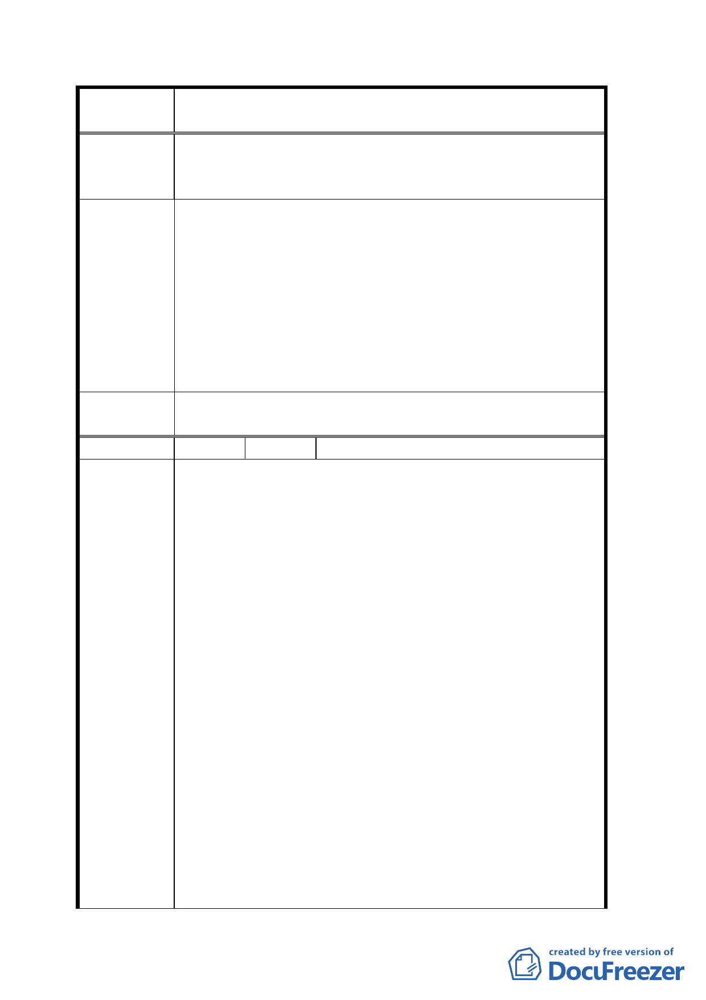

案
名
變更臺北市文山區萬隆段二小段瀝青拌合場用地及住宅區
（專案國宅用地）為學校用地計畫案
爭議不受公眾歡迎之處所，否則何來回饋之舉動。
二、「文心中學」進駐將造成周圍區域房地價下跌，空屋閒
置率增加，更將成為本區之治安隱憂。
本街廓長久以來一直為臺北市政府瀝青拌合場及內政部營
建署重機械大隊造成之空氣污染噪音、重型機具車輛進出
頻繁所苦；且本社區居民並非非理性一味反對設置他項公
眾公共設施，如原景福街機關用地欲規劃設置內政部建築
建 議 辦 法 研究所，本社區居民並無反對意見產生，再再突顯本用地
變更案之主辦單位並未依本街廓之整體長程發展規劃考
量，更未通盤檢討本區域街廓首要應進行都市老舊社區之
更新計畫，本社區住戶實難認同此乃一非經專業評估之變
更使用分區用地變更案。
擬建議處理
意見
同意撤回計畫案。
編 號 ４ 陳情人 反對文心中學設置自救委員會
一、臺北市政府教育局「變更文山區萬隆段國宅用地為文
心中學」一案，違悖都市計畫法第二十六條「都市計
畫經發佈實施後，不得隨時任意變更。但擬定計畫之
機關，每五年至少應通盤檢討一次，依據發展情況，
並參考人民建議，作必要之變更。」及同法第三十四
條「住宅為保護居住環境而制訂，其土地及建築物之
使用，不得有礙居住之寧靜、安全及衛生」等規定。
事實均有違參考人民建議及有礙鄰近居民居住寧靜安
全之顧慮，故建議依法另擇郊區設校。
二、教育局派遣文心中學籌備處主任，曾於景興國中舉行
陳情理由
說明會，與會之民眾依據法理建議：「應通盤檢討全市
學校用地，選定郊區設校。」而會議主持人「欣然允
若」，並邀約本地區代表前往高雄市參觀「瑞平中途學
校」，獲悉其「校舍建在郊區，遠離住宅地帶」，足資
為本市借鏡，取得共識。
三、教育局自食其言，竟未通盤檢討學校用地，而逕洽都
市發展局，在市府及文山區公所「公開展覽—萬隆段
住宅區變更為文心中學用地」，且於二月四日假萬福活
動中心舉行說明會，亦未提出通盤檢討市有學校用地
之有關資料，顯屬缺乏誠信，殊屬遺憾。
四、本次說明會，居民群起抗議，而列席與會之民意代表，
六